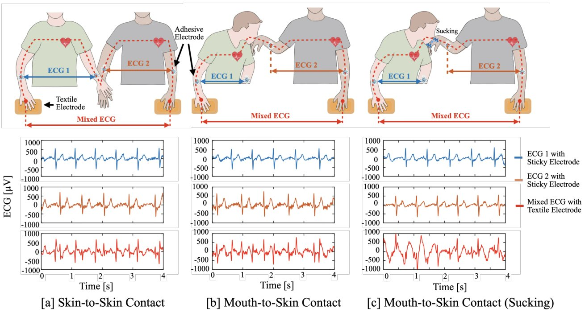
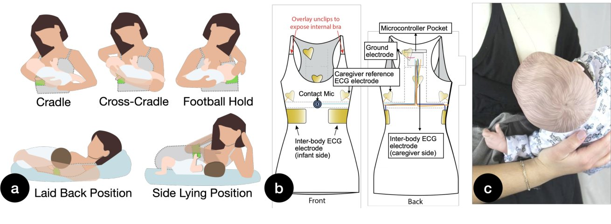
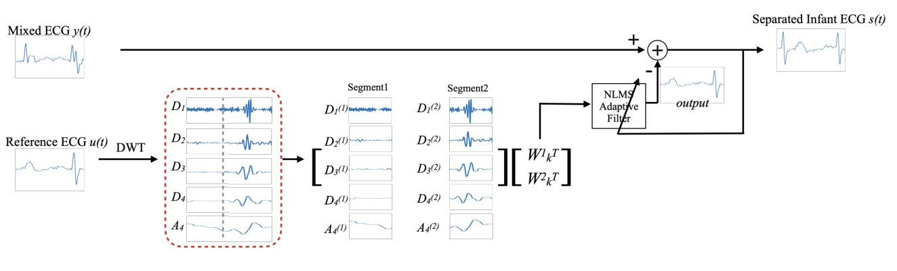
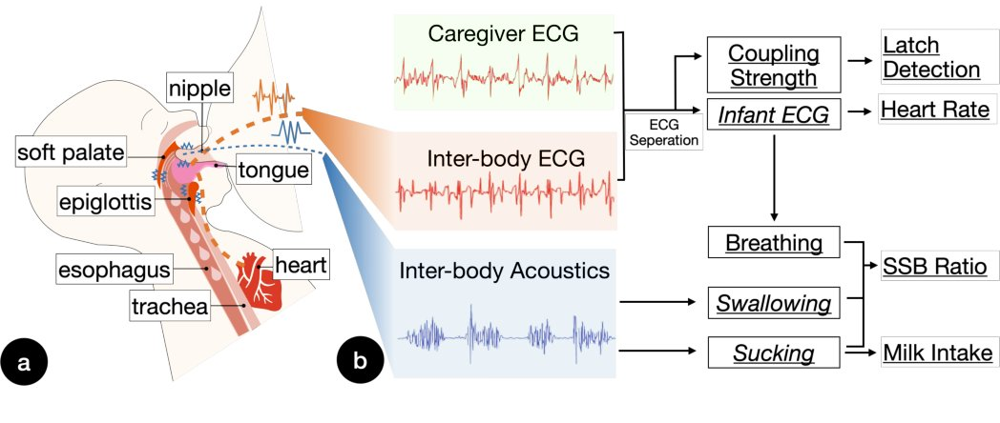

Mammal
Supporting Breastfeeding Monitoring Through Computational Garments with Inter-Body Sensing

Research Question
Breastfeeding is internal and intimate, so it is hard to observe. Can a garment worn by the caregiver measure the infant's feeding and heart activity without putting any sensors on the baby?
Mammal is a computational garment worn by the caregiver. It uses inter-body signal transmission: the infant's ECG and the sounds of sucking and swallowing pass through the natural mouth-to-breast contact and are picked up on the caregiver's body. From these signals, Mammal estimates latch duration, in-feeding heart rate, the suck–swallow–breathe (SSB) ratio, and milk intake.
Results · User study with 8 caregiver–infant dyads
Participants rated Mammal as comfortable, easy to wear, and compatible with their daily breastfeeding routines.
Core Contributions

Characterizing inter-body transmission
We studied how electrical and acoustic signals cross mouth-to-breast contact. Mouth-to-skin contact couples more strongly than general skin-to-skin contact, which lets Mammal detect latching.

Ergonomic nursing garment
A tank-top–style garment, made with fashion designers, that integrates textile electrodes and contact microphones and works across five common breastfeeding postures.

Signal separation & event detection
Algorithms that separate the infant's ECG from the mixed inter-body ECG and detect latch, sucking, and swallowing events.
System Overview
The garment records caregiver ECG, inter-body ECG, and inter-body acoustic signals. Coupling strength gives latch detection. ECG separation recovers the infant's heart rate. Acoustic analysis finds breathing, swallowing, and sucking events, which give the SSB ratio and milk intake.

Cite